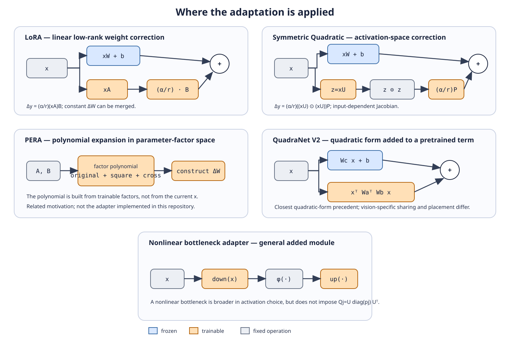

Project 01 · Comparisons
Relationship to low-rank adaptation research
The methods below are compared at the mathematical and architectural levels. Published benchmark results obtained with different backbones, datasets, training budgets, or evaluation protocols are not numerically ranked against the experiments in this study.
| Method | Core mechanism | Relation to this study |
|---|---|---|
| LoRA | Low-rank linear correction (α/r)(xA)B | Direct experimental baseline |
| DoRA | Decomposes weight magnitude and direction | Different weight parameterization |
| MoRA | Uses a square trainable matrix with nonparametric transforms | Weight-space method designed to increase effective update rank |
| HiRA | Hadamard-product high-rank update | Weight-space higher-rank adaptation |
| LoRAN | Applies a nonlinear transformation to the low-rank weight update | Nonlinear weight-space adaptation, not activation-space squaring |
| PERA | Polynomial expansion of low-rank factors | Polynomial structure in parameter/factor space |
| QuadraNet V2 | Factorized quadratic neural transformation | Closely related verified quadratic-form precedent; full multi-output equivalence is not established |
| This study | (α/r)((xU)⊙(xU))P beside a frozen projection | Activation-dependent symmetric quadratic correction |
PERA
PERA introduces polynomial expansion in parameter and low-rank-factor space before factor composition. This study instead applies the nonlinearity directly to the projected activations: x → xU → (xU)⊙(xU) → P. Both approaches investigate higher-order structure in parameter-efficient adaptation, but the polynomial or quadratic operation acts on different mathematical objects.
PERA was not used as an experimental baseline in this project.
QuadraNet V2
For one output coordinate, Δy_j = xQ_jxᵀ, with Q_j = (α/r)U diag(P[:,j])Uᵀ. This places the method within the family of factorized quadratic transformations. Across a complete multi-output layer, all output coordinates share the projection directions contained in U, while P provides signed output-specific coefficients.
Consequently, similarity at the level of a single-output quadratic form does not establish complete architectural equivalence between the Symmetric adapter and QuadraNet V2. The present study therefore treats QuadraNet V2 as a closely related quadratic precedent rather than evidence of either exact equivalence or universal novelty.
Position of the proposed method
The main distinction of the Symmetric adapter is not simply that it uses low rank or that it introduces nonlinearity. Its defining feature is that the low-rank projection is applied to the incoming activation and the projected coordinates are squared before being mapped back to the output space.
This creates an activation-dependent quadratic correction with an input-dependent Jacobian, while retaining a parameter structure comparable in size to the matched LoRA branch.
The experiments in this project evaluate this specific design directly against LoRA under controlled parameter budgets. Other methods in this section are used to clarify the relationship to existing parameter-efficient and quadratic adaptation mechanisms, not as experimentally reproduced baselines.
